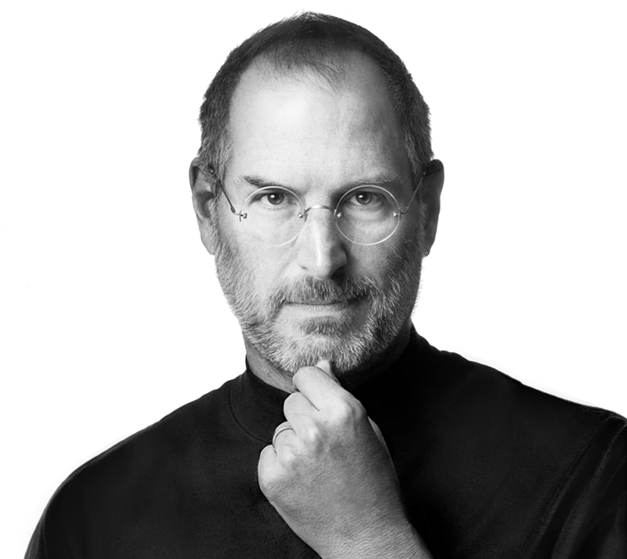

Cuando Steve tenía seis años, la familia se radicó en Mountain View, y el joven cursó estudios en Cupertino. Desde los días de la secundaria demostró interés y habilidad para los equipos electrónicos. De quinceañero conoció a otro joven con quien haría historia: Steve “Woz” Wozniak. A pesar de su talento, en sus estudios universitarios Jobs atravesó dificultades por razones económicas; de modo que desempeñó varios trabajos. Hizo equipo con Wozniak en un club de entusiastas de la electrónica, hasta el momento culminante en el que Woz presentó un prototipo de computador doméstico. Ese fue el inicio.
“Apple” era el nombre de ese computador artesanal. Y Jobs, que tenía gran visión de negocios, notó que tenía enorme potencial. Vendieron varios prototipos, pero necesitan obtener financiación. Woz trabajaba para Hewlett-Packard, y de acuerdo con su contrato, debía presentar sus ideas a la empresa en primer lugar. Pero HP no mostró interés en la Apple. Jobs ofreció parte de la ganancia a Atari a cambio de financiamiento, pero tampoco tuvo éxito. El impulso definitivo vino del joven empresario Mike Markkula, que aportó 250 mil dólares para invertir en la recién nacida Apple Computer, en 1976.
Por estos años, Jobs tuvo su primera hija, la hoy escritora Lisa Brennan-Jobs, con su exnovia de secundaria Chrisann Brennan. La empresa marcó la pauta en la revolución de los computadores personales en la década de los 80s. La Apple II dominó el mercado ampliamente, teniendo como único competidor serio a la IBM PC. Sin embargo, la empresa pasaba por problemas económicos, y vendría luego de eso dos fracasos comerciales con el Apple III, en 1980, y con el sistema Lisa, en 1983. A pesar de que Apple pudo recuperarse posteriormente al lanzar el Macintosh, en 1984, Jobs tenía serias diferencias con el tren ejecutivo, que le hicieron dejar la empresa en 1985.
Jobs compró entonces una empresa de computación gráfica que enfrentaba problemas financieros: The Graphics Group, que trabajaba en conjunto con Industrial Light & Magic, la compañía de efectos especiales de LucasFilm. The Graphics Group cambió su nombre a Pixar, y trabajaría en asociación con Disney para la producción de conocidos éxitos de cine como Toy Story. Posteriormente Jobs terminaría vendiendo Pixar a Disney. Al mismo tiempo, Jobs fundó una empresa de computadoras llamada NeXT Computer, que tuvo una presencia muy modesta entre los consumidores, pero fue determinante entre la comunidad de investigación informática para el desarrollo del concepto de World Wide Web en Internet.
Steve Jobs continuó como CEO de Apple, y siendo la figura impulsora de las subsecuentes innovaciones de la empresa. En 2004 tuvo un diagnóstico temprano de un raro tipo de cáncer de páncreas, a los que los médicos dan diagnóstico favorable. Jobs se negó a intervenirse de inmediato, siguiendo en su lugar un régimen de acupuntura y alimentación vegetariana.
Eventualmente se operó, nueve meses después del diagnóstico, pero la enfermedad se había diseminado. En 2009 requirió un trasplante de hígado. En agosto de 2011 renuncia como CEO de Apple, dejando en su lugar a Tim Cook, y provocando especulaciones varias sobre su salud, dado su aspecto desmejorado.
Steve Jobs falleció el 5 de octubre de 2011, en su residencia de Palo Alto, California, por las complicaciones propias de su enfermedad, que le ocasionaron un paro respiratorio. Fue sepultado en Alta Mesa Memorial Park, en Palo Alto.